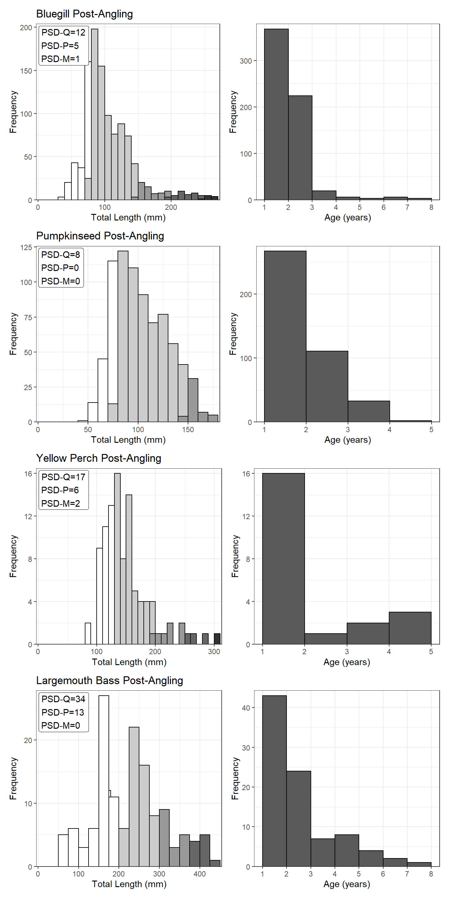

Analysis & Interpretation Questions II
Length- and age-frequency plots, as well as proportional size distribution of quality- (PSD), preferred- (PSD-P), and memorable-length fish, for Bluegill, Pumpkinseed, Yellow Perch, and Largemouth Bass from the POST-ANGLING period are shown below.

Use these results to answer the following questions.
-
Assess the length- and age-frequency histograms for Bluegill, Pumpkinseed, Yellow Perch, and Largemouth Bass from Mid Lake after angler exploitation was allowed.
-
Write a clear paragraph, for each species, that compares the pre- and post-angling size- and age-structure results.
-
How did your summaries from the previous question compare to your expectations from before seeing the post-angling results? Suggest possible reasons for any differences.
-
How do you suppose the annual mortality rate differed between the two periods for each species? Use specific evidence to support your supposition.